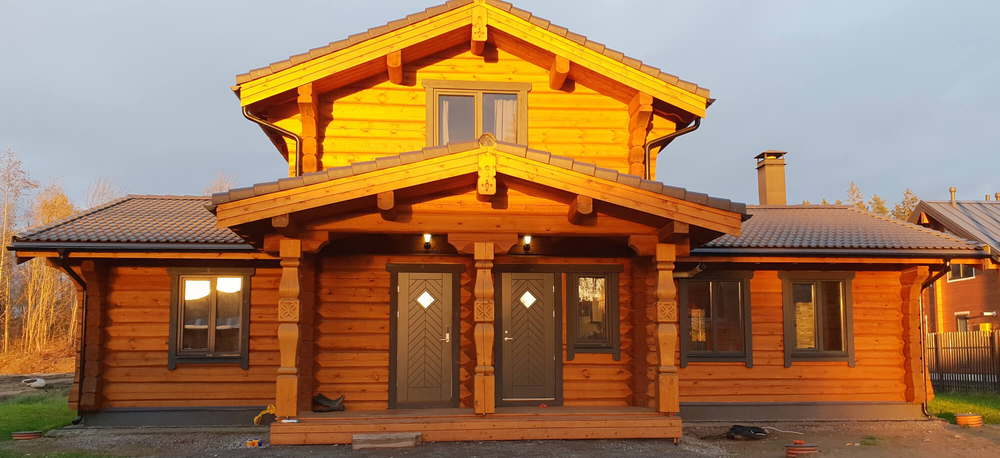
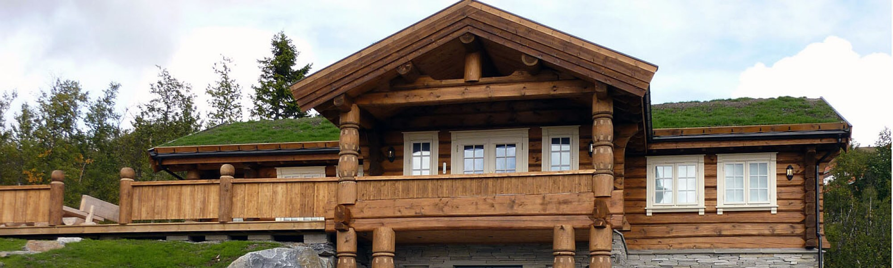

ДЕРЕВЯННЫЕ ДОМА РУЧНОЙ РУБКИ
Дерево.
Характер вашего дома.
Дома ручной рубки из лафета и круглого бревна. Обсудим архитектуру, материал и проект под ваш участок.
Посмотреть домаЛафет и круглое бревноВАРИАНТЫ И КОМПЛЕКТАЦИИПодберём под ваш участокПосмотреть варианты
АРХИТЕКТУРА И ДЕТАЛИ
В деталях
виден характер.
Сравните архитектуру деревянных домов и выберите то, что близко вам.

Дом из дерева
СЕВЕРНЫЙ ДОМ · Санкт-Петербург
Свои пропорции.
Свой характер.
Подберём проект и материал стен. Обсудим нужные помещения, остекление и расположение дома на участке.
Обсудить мой проект